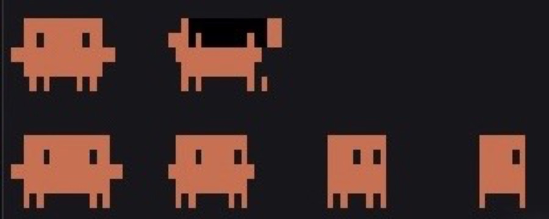
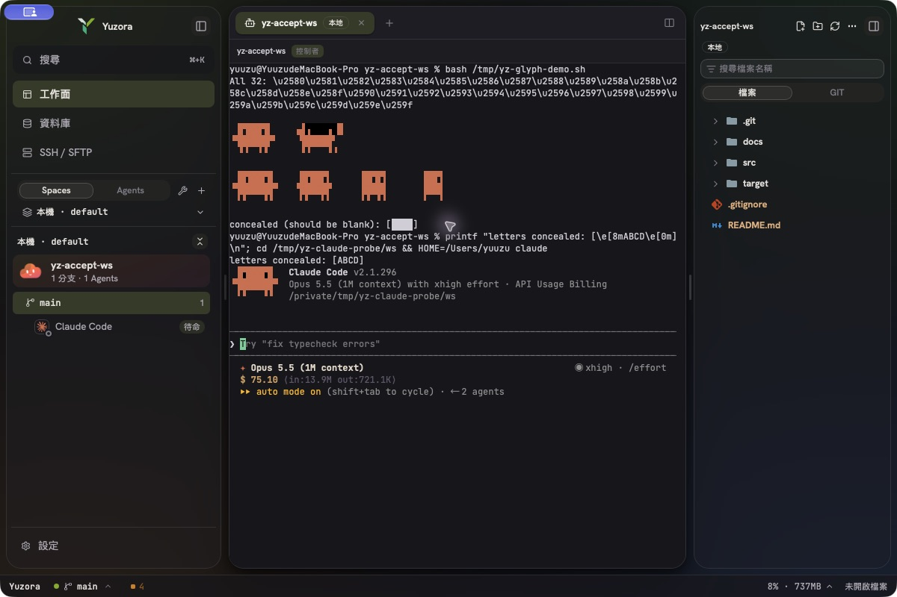
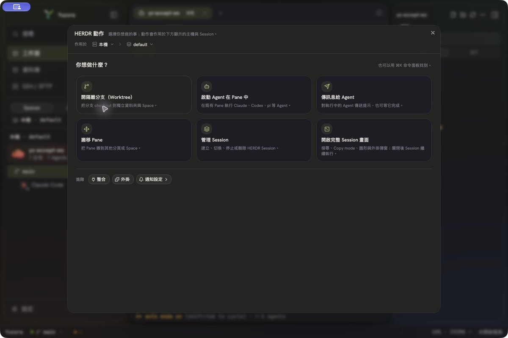
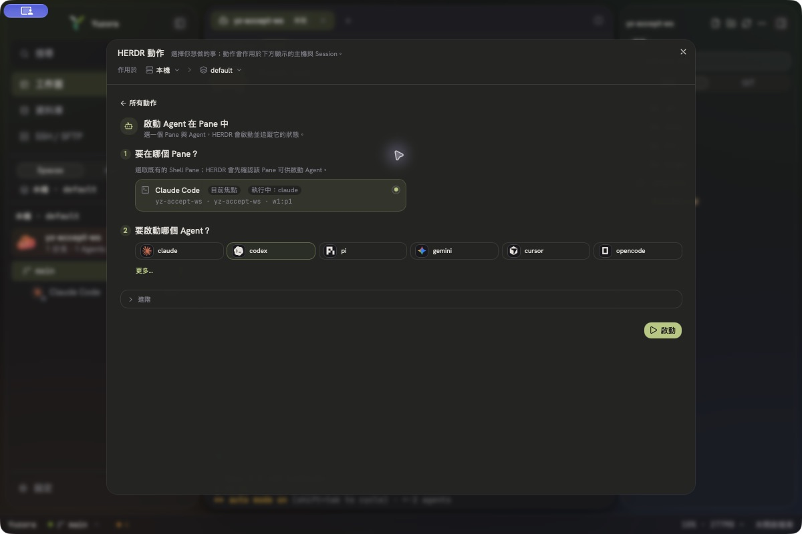
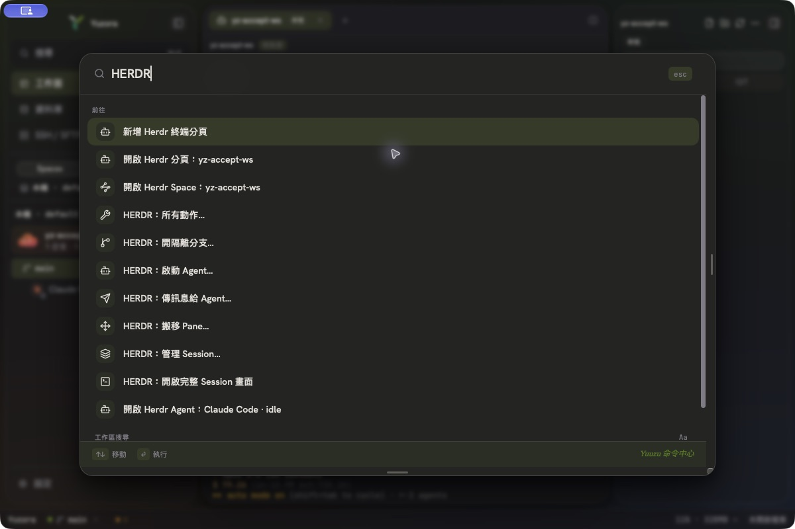
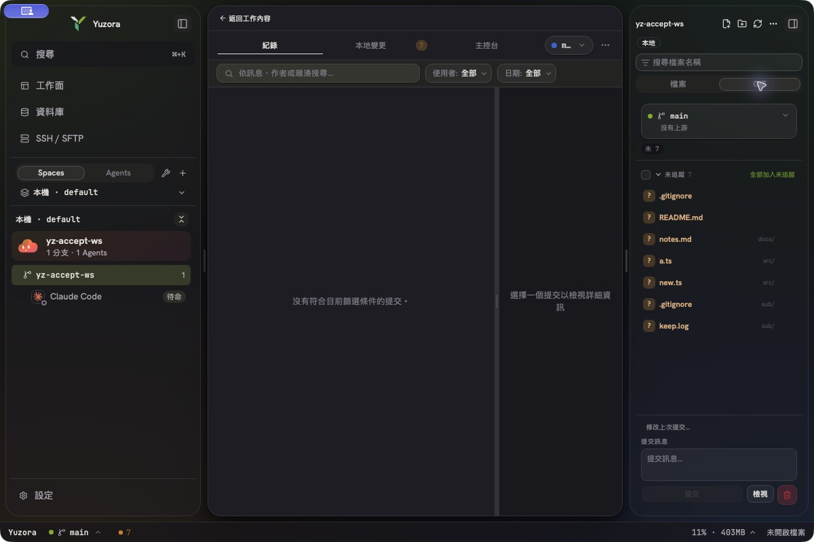

2026-10-10 · 分支 feat/ux-perf-batch（基於 origin/main 36bafc91，v0.0.18）· 未 commit
release/v0.0.18 上同時有 Codex 的自主效能實驗在跑基準，並且會核對檔案雜湊。所有工作都在 repo 外的 .yuzora-lanes/ 進行：integration worktree 加上每條 lane 的 clonefile 副本。主工作樹從頭到尾沒有被改動。@xterm/addon-webgl、不開 GitHub issue、不 commit/push；實機 GUI 驗收已獲授權。@fontsource-variable/jetbrains-mono 子集不含 U+2580–U+259F，本機也沒有安裝 JetBrains Mono，所以 ▐▛███▜▌ 這類字元會落到 PingFang TC 等 CJK 字型，字寬和字高都對不上 cell。customGlyphs（xterm 自繪方塊字元）在 DOM renderer 下不生效。patches/@xterm%2Fxterm@6.0.0.patch，同時改 TS 原始碼與兩個 minified bundle：U+2580–U+259F 的 cell 各自輸出成一個 span，文字是空白，寬度剛好一格，並帶 xterm-block-<hex> class。src/terminal/xtermBlockGlyphs.css，以 currentColor 漸層圖層畫出全部 32 個字元：八分之幾高寬的條塊、象限與陰影；不覆蓋 cell 背景色。SGR 8 隱藏的 cell 維持不畫。fixtures/xterm-block-glyphs.html 可用於日後升級 xterm 時複驗；patches/README.md 已記錄做法。"tui": "default"）完全不開啟 ?1000/?1002/?1003/?1006，所以 Clawd 在任何終端機都點不動，這是 Claude 本身的限制。/tui fullscreen 或 CLAUDE_CODE_NO_FLICKER=1）會開啟這些滑鼠回報。onClick 會隨機播放 14 種動畫之一，已在 binary 中確認。herdrTerminalMouseMove 協商，舊版 helper 不會收到 move，避免整條串流被中斷。

實機點擊證據：以隔離 HERDR 的 pane read 當 oracle，每 120 ms 取樣一次。點擊前 30 次取樣都是靜止影格；點擊後連續兩次點擊都出現多個動畫影格，包括 ▗▟▛███▛█▄（舉手）、▐▂███▂█（閉眼）與 ·／~ boop 粒子。假 TUI 記錄到每次點擊都完整收到 ESC[<0;16;4M 和 ESC[<0;16;4m。
main webview 最近 3 次原生 Drop 的路徑，有效期 120 秒。FilesImport，帶 hello 旗標，只能由 Rust 指令發送，renderer 的 host_request 會拒絕。wslpath 會把 C:\x 轉成 /mnt/c/x；同一發行版的 \\wsl.localhost\… 直接對應。其他發行版、其他 UNC share，以及只拖發行版根目錄，都會回報明確錯誤。未實機驗證：跨 app 的 Finder 拖放無法由 CUA 自動化，需要使用者手動驗收；Windows 與 WSL 只有單元測試覆蓋。
herdrFeatures.ts 都沒有改動，舊有的每個功能都仍可到達。


| 項目 | 前 | 後 | 方法 |
|---|---|---|---|
每次 status_of 的 git 子程序數 | 2 | 1 | git_read_efficiency.rs 固定斷言；被省掉的 rev-parse 約 17 ms（fixture p50） |
| ignored 目錄寫入 5,000 檔觸發的 status 次數 | 每批都觸發；佇列溢出時改成整個工作區重新掃描 | 0 | 真實 watcher 加上 30k／3k／20k fixture（git_perf_fixture.rs，需 --ignored） |
| watcher 佇列 | 16（500 檔寫入時溢出 523 次） | 1024 | 同上 |
core.untrackedCache／--no-renames | 都在雜訊範圍內（未達 ≥10% 門檻），不採用 | A/B 交錯量測，n=25 | |
正確性保護：
git ls-files --cached（追蹤中的檔案一律算相關），再由 git check-ignore 確認（巢狀 !negation 也正確）。: 開頭或非 UTF-8 的路徑一律視為相關。
new.ts 與巢狀 negation 的 keep.log 立即出現；target/ 裡 500 個 ignored 檔案沒有被誤列| 項目 | 前 | 後 | 方法 |
|---|---|---|---|
閒置時背景 herdr session list fork 次數 | 約 15／分鐘／主機 | 約 5／分鐘 | 12 秒 TTL；以計數測試證明（依計算，未在實機計次） |
| Snapshot 管線（58.5 KB） | 478 µs | 307 µs（−36%） | release micro-benchmark；配置記憶體的整份序列化 2 → 0 |
| 終端機 frame（64 KiB） | 41.0 µs，1525 MB/s | 20.6 µs，3038 MB/s | release micro-benchmark（單趟 typed 解析、以 base64 長度估算大小、move 取代 clone） |
| 終端機 frame（4 B） | 0.78 µs | 0.51 µs | 同上 |
| 其他 pane 的 Agent 狀態改變時，無關分頁的重繪次數 | 1 | 0 | React Profiler（structural sharing 加上 selector 改為比較基本型別） |
其他改動：
herdrSessionsPolled 協商，舊版 helper 會退回原本的指令。| 檢查 | 結果 |
|---|---|
| vitest（全部） | 328 檔、4,110 通過、34 skipped、0 失敗 |
host crate：test／clippy -D warnings／fmt | 661 通過、0 失敗、0 警告、通過 |
| app crate：test／clippy exact baseline／fmt | 501 通過、0 失敗、baseline 吻合 19 筆、通過 |
| typecheck（tsgo ×2）／lint | 通過／0 errors（49 個既有 warnings） |
| Pages：site:companions／site:seo／demo:build | 通過 |
| 實機 GUI（隔離 HOME、隔離 HERDR server、guard wrapper） | 人偶渲染、fullscreen 點擊、HERDR 動作首頁／表單／⌘K／完整 Session 畫面、Git 風暴與 negation |
statusRevision；index-only 事件不重載分支[Unreleased] 段落。repo 過去沒有用過這種段落，release 時要改成版本號。